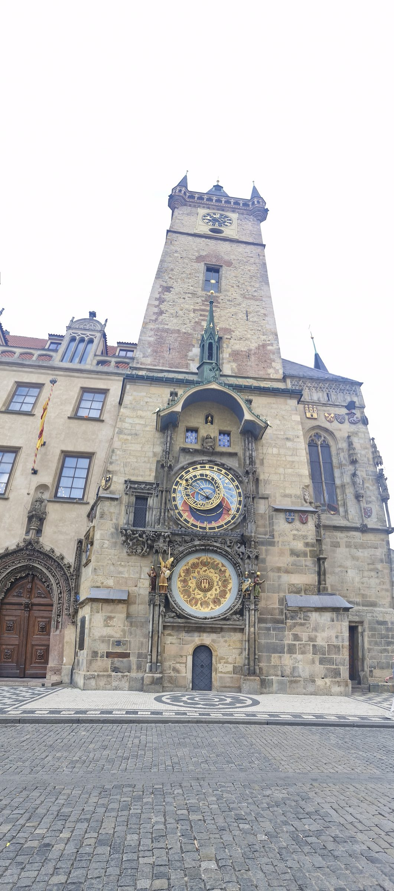
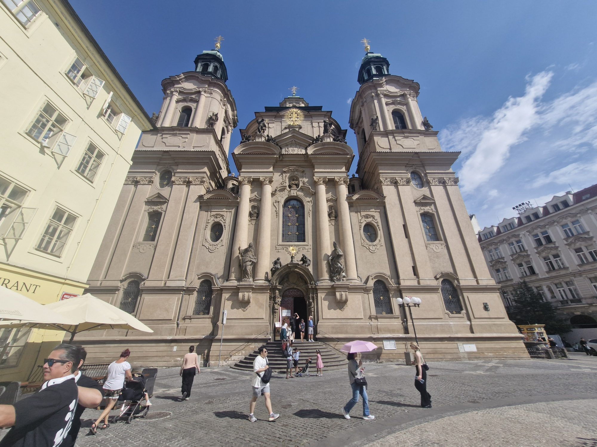

Issue 03 · 2026🇨🇿 CZECH REPUBLIC
Munasinghe Travel Magazine
CZECH
REPUBLIC
Prague · A castle, a bridge, a velvet revolution
★ 1,200 Years of History
🏰 Prague Castle
🌉 Charles Bridge
Munasinghe Family · Prague · 13–14 Jul 2026
No. 03 · A Letter from the Road
Welcome to
the City of a
Hundred Spires.
Prague survived. That's the line we kept coming back to. It survived the Hussite wars, the Thirty Years' War, Nazi occupation, communist rule, and most miraculously, the wave of Allied bombing that flattened so much of Central Europe in 1945. Walking its cobblestones is walking through the only major European capital that still looks the way it did in the 1700s.
For two summer days we lived inside that surviving city: in a Gold Art Apartment overlooking the Old Town, near the river that splits the city in two. Our days began with cobblestone walks before breakfast, when the Charles Bridge was empty and the morning mist made the statues look like ghosts.
A word on where we are: this is Bohemia. Prague has been the capital of the Kingdom of Bohemia for over a thousand years — the throne of the Bohemian kings, who ruled from the castle on the hill. Its golden age came under Charles IV in the 1300s, King of Bohemia and Holy Roman Emperor, who made Prague his imperial capital and built the very things we came to see: the Charles Bridge, St. Vitus Cathedral, and the university that still bears his name. Bohemia is the historic land; Prague is, and always has been, its crown.
— The Munasinghes, 2026
In this issue
- Welcome — The City of Spires02
- Charles Bridge at Sunrise03
- Prague Castle — All Day Long04
- Old Town Square05
- Tastes of Bohemia06
- Reflections + What's Next07
The Journey · Chapter Three
Across a border,
into Bohemia.
The story so far: we began at the Great Wall and the Forbidden City in Beijing, flew west into a jet-lagged first day in Munich, then climbed into the Austrian Alps — Salzburg's Sound of Music garden, the lake at Hallstatt, and two nights in a hilltop castle.
Now we cross our first European land border. Czechia is our third chapter, and it is really one shining city: Prague, the City of a Hundred Spires — Charles Bridge at dawn, a castle above the river, and an astronomical clock that has kept time since 1410. This page rides at the front of every issue: where we've been, where we are, and where we're headed next.
The Route · 15 Countries · 33 Cities · 30 Nights
01China ✓
02Austria ✓
03Czechia ★
04Hungary
05Slovenia
06Italy
07Switzerland
08Germany
09France
10Netherlands
11Belgium
12Denmark
13Sweden
14Vatican
⌂Home
Today — Czechia: a dawn drive out of Austria, and two days in Prague ahead.
— Issue 03 · CZECH REPUBLIC · The Journey —
ON THE ROAD · AUSTRIA → PRAGUE · DAY 3
Dawn, one last breakfast,
and north to Prague.
Day three began the way the last two had — everyone awake at five, and that magnificent castle breakfast — before we said goodbye to Burg Altpernstein and pointed the car north.
Mon 13 Jul 2026Burg Altpernstein → PragueFarewell to the castle
By the third morning it had become a rhythm: awake at five, all of us, the children as bright as the adults, and down to that extraordinary breakfast — cheese and ham, fruit and cereal, more than we could carry — one last time. Then we hauled the bags back down the castle's lift-less stairs, loaded the car, and said our goodbyes to Burg Altpernstein, the hilltop fortress that had been our first European home.
Three mornings in a castle, three five-o'clock starts, and one breakfast we will miss for the rest of the trip.
And then we drove north. Austria fell away behind us — its lakes, its salt villages, its Sound of Music hills — and the road pointed toward Bohemia and Prague: the city of a hundred spires, two days of cobblestones and Gothic towers waiting at the end of it. The children settled happily into their beloved car seats. The next chapter had begun.
— Issue 03 · CZECH REPUBLIC · The Road —
PRAGUE CASTLE · DAY 3 · IN OUR OWN WORDS
The castle, the cathedral,
and a little train.
That afternoon we climbed to Prague Castle and St. Vitus Cathedral — and when small legs gave out, a mini tourist train carried us round, narrating the city in English as it went.
Mon 13 Jul 2026Pražský hrad + St. VitusAfternoon · foot + mini-train
We made for the hill and Prague Castle — at seventy thousand square metres, the largest castle complex on earth, a thousand years of Bohemian kings gathered around the soaring spires of St. Vitus Cathedral. We walked its courtyards and stepped inside its great churches — the cathedral, and St. George's Basilica beside it — the children's necks tipped all the way back to take in the stained glass. And here was the surprise: for all the castle's fame, it was the cathedrals that took our breath away. Grander than the fortress that holds them, they felt like the true crown of the hill.
But three small pairs of legs can only climb so far. When the tiredness set in, we found the perfect rescue: a little tourist train — the kind that trundles the sightseeing route on rubber wheels — that carried us gently around the sights and, better still, explained everything in English as it went. The kids rode, rested, and learned all at once.
When small legs give out, a little train and an English guide can save the whole afternoon.
One thing we worked out the hard way, and pass on gladly: in Prague you can simply buy your tram ticket on board the tram itself. We had walked half the district hunting for a kiosk before we discovered it — and, to our delight, the children travelled free. A small victory, and a lesson banked for the rest of the trip. On the way back down the hill we stopped in a leafy little park — the one with the small statue of a girl holding a dove — and sat in the shade to share a spiral "tornado" potato on a stick and a warm trdelník, the spit-roasted chimney cake, filled with ice cream and Nutella. A castle, three churches, and the best snack in Prague, all in one afternoon.
— Issue 03 · CZECH REPUBLIC · The Castle —
CHARLES BRIDGE · DAY 4
The bridge before
the crowds wake.
We left early and walked out onto the Charles Bridge to find Prague's most famous crossing almost entirely to ourselves.
Tue 14 Jul 2026Charles Bridge · Old Town → Malá StranaOn the bridge by 8:15am

Photo · Munasinghe
The five of us at the Old Town Bridge Tower — Charles Bridge almost to ourselves, just after eight in the morning.
The secret to the Charles Bridge is simple: go early. By mid-morning its 515 metres run shoulder to shoulder, but get there before the day fills up and it becomes a different place. We left the apartment at eight and were out on the bridge by a quarter past — and to our delight, at that hour it was almost empty. The most famous crossing in Prague, near-deserted: just us, the thirty baroque saints who have guarded it since the 1700s, and the quiet morning. The bridge has stood since 1357; for a little while, it was almost entirely ours.
The city of a hundred spires — best seen from an almost-empty bridge, early, before the crowds wake.
We walked its full 515 metres across to the Malá Strana side and back, past the thirty baroque saints, the mist lifting off the Vltava, the towers at each end catching the first real light of the day. By the time we turned back toward the Old Town, the first tour groups were only just arriving. We had beaten them by an hour — and it had been worth every minute of the early start.
— Issue 03 · CZECH REPUBLIC · Charles Bridge —
OLD TOWN SQUARE · THE ORLOJ
A clock that has kept
time since 1410.
From the bridge we walked back into the Old Town Square for the thing everyone comes to see — the Astronomical Clock, striking on the hour.
Tue 14 Jul 2026Old Town Hall, Staroměstské náměstíThe Prague Orloj

Photo · Munasinghe
The Prague Orloj on the Old Town Hall tower — the oldest astronomical clock in the world still in operation, running since 1410.
The Astronomical Clock — the Orloj — has hung on the wall of the Old Town Hall since 1410, which makes it the oldest clock of its kind still working anywhere in the world. It is really three instruments in one: a clock that tells the hour, a golden calendar dial below that turns once a year through the signs of the zodiac, and an astronomical dial that maps the sun and moon against the heavens. Six hundred years of gears, and it still keeps perfect time.
Six hundred years of clockwork — and every hour, on the hour, the Apostles still walk.
We joined the crowd on the hour and watched the show. As the bells sounded, two small windows opened and the twelve Apostles paraded across in turn, while beside the dial a skeleton — Death himself — tolled his bell. It is a one-minute performance that has drawn crowds into this square for six centuries; and when it ended, everyone looked up at the same moment, and smiled.
— Issue 03 · CZECH REPUBLIC · The Astronomical Clock —
OLD TOWN · PRAGUE · IN OUR OWN WORDS
A city that looks
like King's Landing.
Prague's Old Town is majestic in a way a single photograph can't hold — a real-life King's Landing of spires and red roofs, where even the shop windows wear the city's grandeur.
Tue 14 Jul 2026Staroměstské náměstí, Old TownThe most beautiful square we saw

Photo · Munasinghe
St. Nicholas Church on the Old Town Square — the baroque grandeur that makes Prague feel like a fantasy capital made real.
There is a word for Prague's Old Town, and the word is majestic. Standing in the great square, ringed by the twin Gothic spires of the Týn Church, the pastel palaces and the old town hall, I kept thinking of King's Landing — the capital city from Game of Thrones — because that is exactly what Prague looks like: a fantasy capital made real, all towers and turrets and red roofs climbing the hills. Except Prague is not a film set. It has stood, and been loved, and survived, for a thousand years.
Prague looks like King's Landing made real — and no single photograph is ever big enough to hold it.
We tried, and failed, to capture it. Every photograph came back smaller than the thing itself; the majesty of Prague simply does not fit inside a phone screen. You have to stand in the middle of it, turn slowly, and let the spires close in around you.
And there is another kind of grandeur here too. The Old Town streets are lined with every luxury brand you could name — the shopfronts as polished and stately as the palaces above them, the shopping every bit as majestic as the architecture. A city that looks like a crown, with shops to match.
— Issue 03 · CZECH REPUBLIC · Old Town —
JEWISH QUARTER · JOSEFOV · IN OUR OWN WORDS
I couldn't get
enough of this city.
By half past three I was back in the room — and it wasn't enough. Prague had got under my skin, so we went out again, all of us, and walked the old Jewish Quarter.
Tue 14 Jul 2026Josefov, Prague3:30pm · a second walk

Photo · Munasinghe
A Josefov street of yellow, sand-gold walls — the colours that, for a moment, carried me all the way back to Saudi Arabia.
It was half past three when we got back to the room, and I found I was not ready to be finished with Prague. The city had got under my skin. So we went out again, the whole family, and walked — into Josefov, the old Jewish Quarter, one of the oldest and best-preserved in Europe, its synagogues and ancient cemetery folded into a handful of narrow, remarkable streets.
A wall the colour of sand, in the middle of Europe — and suddenly I was a child in Saudi Arabia again.
And there, unexpectedly, the city handed me a memory. Walking those streets I was somewhere else entirely — back in Saudi Arabia, where I spent part of my childhood. It was the colours that did it: the yellow walls, the warm sand tones of the stone glowing in the afternoon light, so like the country of my younger years.
That is the strange gift of travel — how a wall the colour of sand, on a street you have never walked before, can hand you back your own childhood. We had come out for a little more of Prague. Prague gave me Saudi Arabia instead.
— Issue 03 · CZECH REPUBLIC · Josefov —
★ TASTES OF THE TRIP
Two street snacks we ate
on the move.
We never sat down to a Czech feast — we ate on our feet, between the spires. But these two, bought from a cart and shared in the shade, were pure Prague.
📷 images/czech/food-01-trdelnik.jpg
01
Trdelník
A spit-grilled, cinnamon-sugar pastry rolled into a hollow tube and filled with ice cream and Nutella. Warm, sweet, and messy in the best way. Ours came on the walk down from the castle.
📍 Castle hill · shared in the park · Day 3
📷 images/czech/food-02-tornado-potato.jpg
02
Spiral "Tornado" Potato
A whole potato cut into one long spiral, skewered on a stick, deep-fried crisp and salted. Half chip, half work of art — and gone in minutes between five sets of fingers.
📍 Castle hill · on a stick · Day 3
— Issue 03 · CZECH REPUBLIC · 06 —
REFLECTIONS · CZECH REPUBLIC
A city carved
in a thousand
tiny details.
What we will remember most about Prague is the detail. We loved the cathedral above everything — but it was not alone: every building around it was carved and moulded and ornamented with a thousand small details, as though no surface in the whole city was ever allowed to be plain.
And Prague taught us a lesson we would carry for the rest of the trip: in a July heatwave, you start early. Reach the sights by first light and by one o'clock you have covered almost everything — and beaten both the sun and the crowds. When we crossed the Charles Bridge at a quarter past eight it was nearly empty; the night before, that same bridge had been shoulder to shoulder. Early is everything.
Favourite moment
The cathedral — and the endless carving on every building around it. Nothing in Prague was ever plain.
Hardest moment
The July heat. The trick we learned: start at dawn, and by 1pm you have seen almost everything.
If we come back…
A cooler month, the river cruise we let go this time — and maybe a medieval dinner.
— Navin, Lana, Avisha, Aviann & Avin Munasinghe
Prague · 13–14 July 2026
Munasinghe Travel Magazine
No. 03 · One of Fifteen
★ NEXT ISSUE ★
HUNGARY
Two cities on a river — Buda above, Pest below — joined by a chain bridge in 1849.